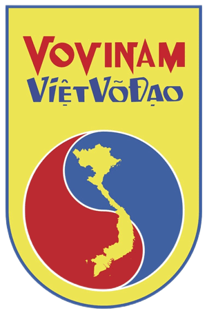

🥋
Hệ thống Vấn đáp Lý thuyết
Vovinam Việt Võ Đạo
Trường Đại học FPT · Bộ môn Giáo dục Thể chất · 50 câu hỏi – 3 kỳ thi
📊
Tiến độ học tập
0
Câu đã làm
—
Điểm TB
0
Câu yếu (<50%)
Chưa bắt đầu
0 / 50
🎯
Chọn kỳ thi
⚡ Võ 1
Câu 1–10
🔥 Võ 2
Câu 11–30
💎 Võ 3
Câu 31–50
🏋️
Chọn chế độ luyện tập
🎲
Thi thử (Bốc thăm)
3 câu ngẫu nhiên như thi thật
📚
Học thuộc lòng
Hỏi tuần tự, đủ tất cả câu
🃏
Flashcard nhanh
Tự đánh giá, không cần mic
💪
Ôn câu yếu
Luyện các câu dưới 50%
⚙️
Cài đặt trước khi luyện
🔊 Tốc độ đọc câu hỏi:
Chậm
Vừa
Nhanh
Đồng hồ 30s: Bật
🚀 Bắt đầu luyện tập
💾
Quản lý tiến độ
⬇️ Xuất kết quả (.json)
⬆️ Nhập tiến trình
🗑️ Xóa toàn bộ
🔊
Chậm
Vừa
Nhanh
▶ Đọc câu hỏi
⏹ Dừng
—
⏱
30
Câu 1 / 3
Võ 1
Đang tải câu hỏi...
🎙️
Nhấn nút bên dưới để bắt đầu trả lời
0%
📖 Xem đáp án mẫu
🎙️ Ghi âm
⏭ Bỏ qua
▶ Câu tiếp
Câu 1 / 10
Võ 1
🔄 Xem / Ẩn đáp án
❌ Chưa thuộc
⏭ Bỏ qua
✅ Đã thuộc
🏠 Về trang chủ
🏅
Kết quả bài thi
0%
📋
Chi tiết kết quả
⚠️
Câu cần ôn thêm (dưới 50%)
🔄 Làm lại kỳ này
🏠 Trang chủ